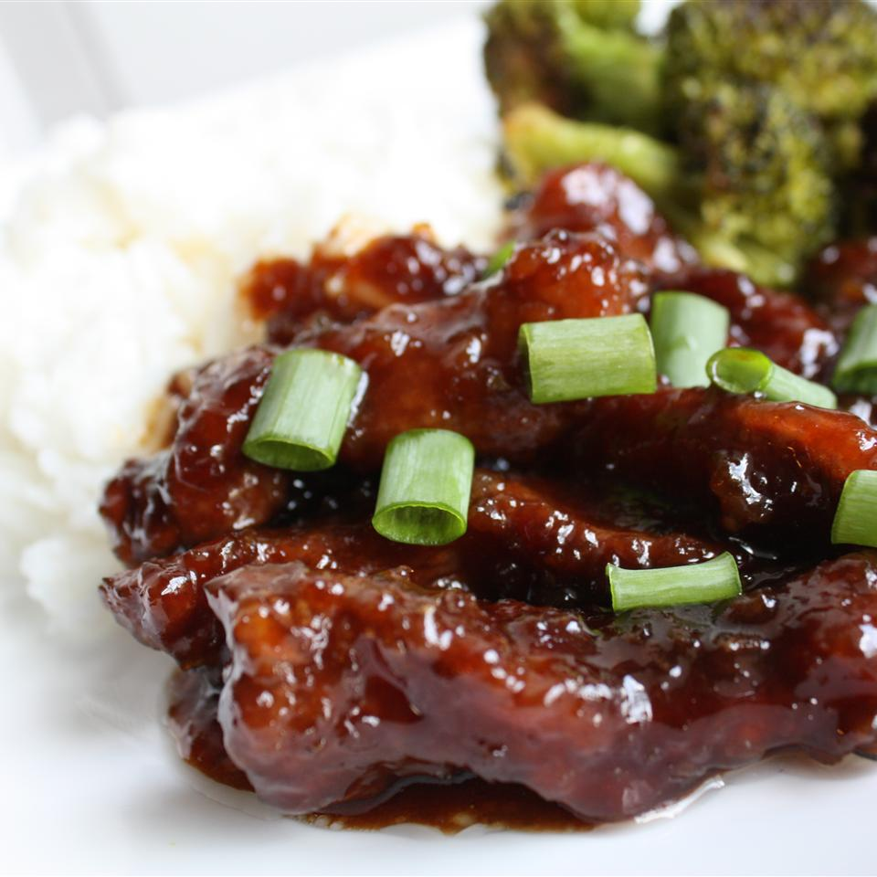

Mongolian Beef

Description
A soy-based Chinese-style beef dish. Best served over soft rice noodles or rice.
Ingredients
- 2 teaspoons vegetable oil
- 1 tablespoon finely chopped garlic
- ½ teaspoon grated fresh ginger root
- ½ cup soy sauce
- ½ cup water
- ⅔ cup dark brown sugar
- 1 pound beef flank steak, sliced 1/4 inch thick on the diagonal
- ¼ cup cornstarch
- 1 cup vegetable oil for frying
- 2 bunches green onions, cut in 2-inch lengths
Steps
- Heat 2 teaspoons of vegetable oil in a saucepan over medium heat,
and cook and stir the garlic and ginger until they release their fragrance,
about 30 seconds. Pour in the soy sauce, water, and brown sugar.
Raise the heat to medium-high, and stir 4 minutes,
until the sugar has dissolved and the sauce boils and slightly thickens.
Remove sauce from the heat, and set aside.
- Place the sliced beef into a bowl, and stir the cornstarch into the beef, coating it thoroughly.
Allow the beef and cornstarch to sit until most of the juices from the meat have been absorbed by the cornstarch, about 10 minutes.
- Heat the vegetable oil in a deep-sided skillet or wok to 375 degrees F (190 degrees C).
- Shake excess cornstarch from the beef slices, and drop them into the hot oil, a few at a time.
Stir briefly, and fry until the edges become crisp and start to brown, about 2 minutes.
Remove the beef from the oil with a large slotted spoon, and allow to drain on paper towels to remove excess oil.
- Pour the oil out of the skillet or wok, and return the pan to medium heat.
Return the beef slices to the pan, stir briefly, and pour in the reserved sauce.
Stir once or twice to combine, and add the green onions.
Bring the mixture to a boil, and cook until the onions have softened and turned bright green, about 2 minutes.